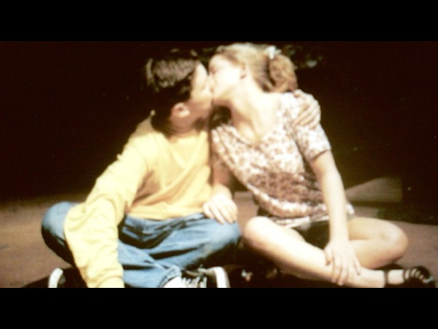
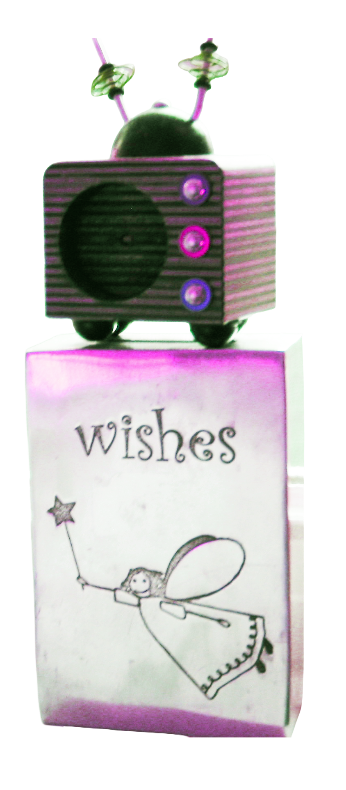
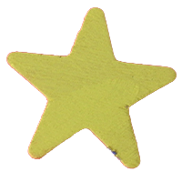
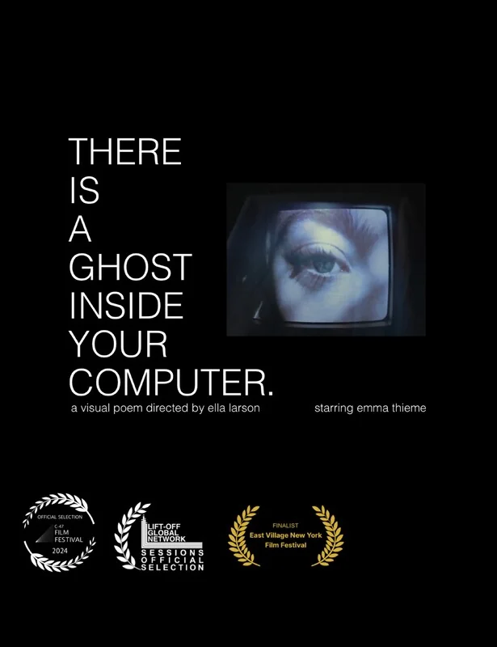
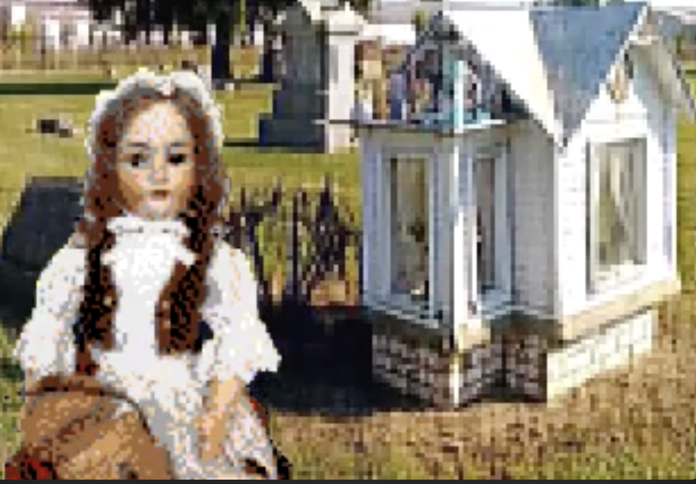

“She Loves Him” Music Video
YouTube

Here is a selection of some work I have done for and with my freelance clients. I typically work with musicians but have also done gallery work, 1-on-1 consulting, and archival assistance. My recent projects have mainly been with bands who are looking to promote singles, albums, and tours. I am usually asked to provide editing services and shooting services.
This was the first full-length music video I was commissioned to make. Directed, shot, and edited by me. This was early in my experimental photo animation style. It was shot over a week-long road trip and was shot using only two vintage digital cameras.

YouTube
This duo reached out to me wanting ideas for a visualizer to promote an upcoming EP. I helped with creative direction and produced several visualizers and overlays for pre-existing footage. These visuals were used on various social media pages to promote not only their new EP but their upcoming tour.

Google Drive
My work with Connor Wright began in late 2023, when he reached out over social media asking me to sift through some digital archives for him to find inspiration photos for future paintings. After we built a rapport over the next two years or so, he reached out in mid-2025 to help him curate the photos he would be painting for his opening gallery show in New York, “Alexa, Truth or Dare.” This has by far been the biggest opportunity for me as an artist, and while I no longer work with Wright, I learned a lot about my values and standards as an artist and historian through this process.
I have been interested in video production the second I was introduced to a camera and a laptop. These are some more examples of projects I have directed, shot, and edited.
YouTube

FilmFreeway

YouTube
Tvwishes, before it was known as tvwishes, began when I stumbled upon the gold mine that was Flickr. Founded in 2004, Flickr.com is an image and video hosting service and an online community. I first became aware of Flickr through places like Tumblr and “WeHeartIt”, social media sites known for reposting or “reblogging” other user-generated and user-uploaded content. This meant the true source of many of these images was lost. As I started tracking down the original sources of my favorite photos online, I noticed many could be traced back to Flickr. Exploring Flickr's vast archive of images became an obsession. I found myself particularly interested in looking at images taken from around 1998-2009. Flickr provides metadata for each image, which let me see exactly when photos were taken, what camera was used, and how many views and likes each photo had. Ultimately, I became attached to the forgotten, decades-old, amateur photography that scattered across Flickr's pages, and so I decided to collect them and start uploading them to Instagram, TikTok, and occasionally Tumblr.
@tvwishes
@tv.wishes
Interview · Substack
Interview · Instagram